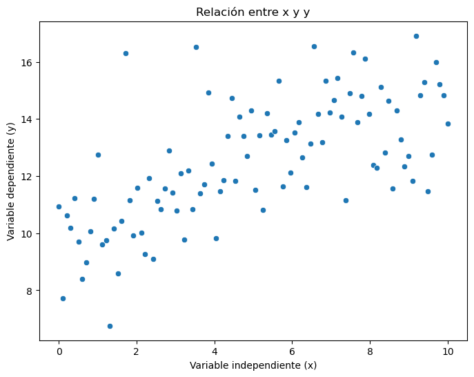
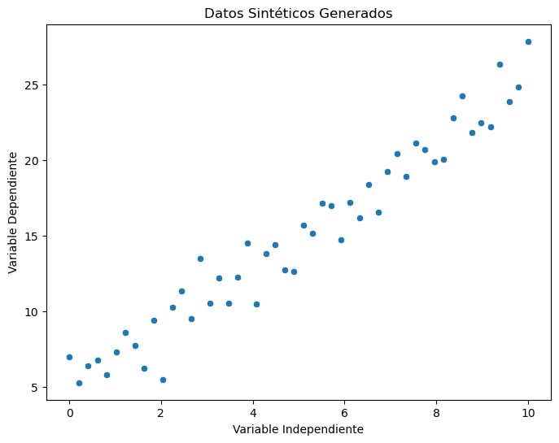
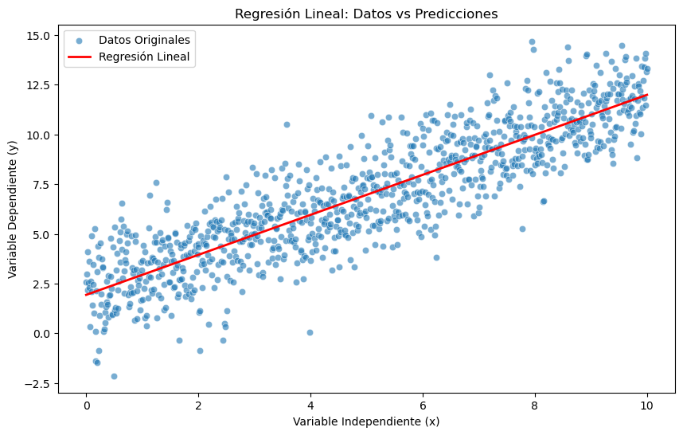
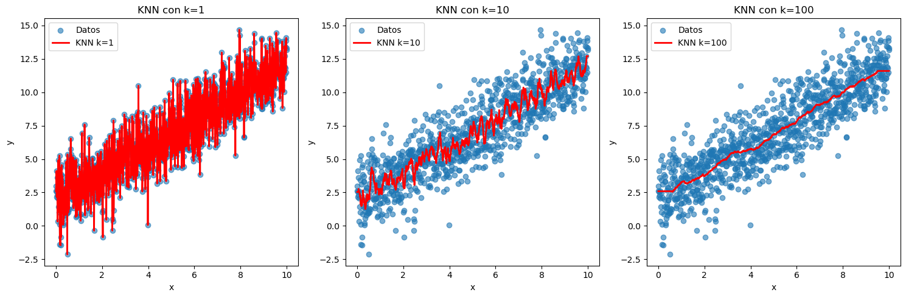
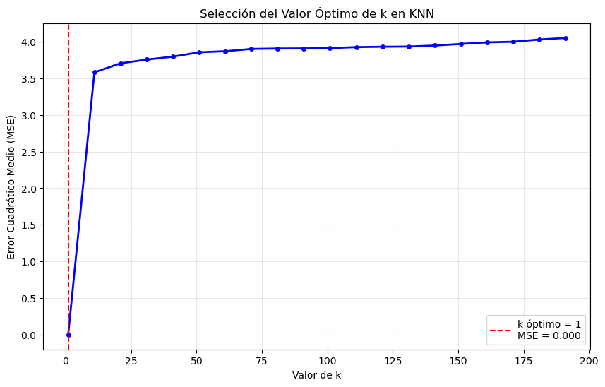
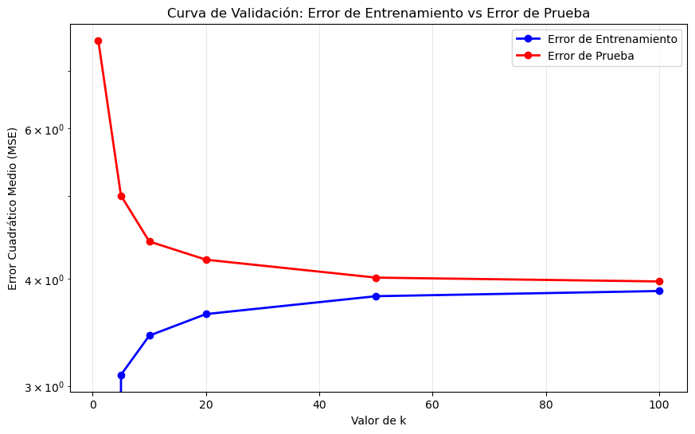

import numpy as np
import pandas as pd
import matplotlib.pyplot as plt
import seaborn as sns
from sklearn.linear_model import LinearRegression
from sklearn.neighbors import KNeighborsRegressor
from sklearn.metrics import mean_squared_error
from sklearn.model_selection import train_test_splitIntroducción a Python para Minería de Datos
Este notebook cubre los fundamentos de Python necesarios para minería de datos, incluyendo:
- Fundamentos de NumPy: Creación y manipulación de arrays
- Fundamentos de Pandas: Manipulación de datos estructurados
- Iteración: Cómo iterar sobre diccionarios y listas
- Visualización: Creación de gráficas con matplotlib y seaborn
- Funciones con Type Hints: Definición de funciones bien documentadas
- Regresión Lineal: Implementación y evaluación
- K-Nearest Neighbors: Implementación y selección del parámetro k
- Estimación del Error Real: Técnicas de validación
1. Librerías Necesarias
Primero importamos todas las librerías que usaremos en este notebook:
2. Fundamentos de NumPy
NumPy es la librería fundamental para computación científica en Python. Proporciona arrays multidimensionales eficientes.
2.1 Creación de Arrays
# Creamos un array de 100 números igualmente espaciados entre 0 y 10
X = np.linspace(0, 10, 100)
print("Primeros 5 elementos:", X[:5])
print("Forma del array:", X.shape)
print("Últimos 10 elementos:", X[90:])Primeros 5 elementos: [0. 0.1010101 0.2020202 0.3030303 0.4040404]
Forma del array: (100,)
Últimos 10 elementos: [ 9.09090909 9.19191919 9.29292929 9.39393939 9.49494949 9.5959596
9.6969697 9.7979798 9.8989899 10. ]2.2 Operaciones con Arrays y Generación de Datos
# Acceso a elementos individuales
print("Elemento en posición 1:", X[1])
# Generación de datos sintéticos para regresión lineal
# y = 0.5*x + 10 + ruido_gaussiano
y_linear = 0.5 * X + 10 + np.random.normal(loc=0, scale=1.5, size=100)
print("Primeros 5 valores de y:", y_linear[:5])Elemento en posición 1: 0.10101010101010101
Primeros 5 valores de y: [10.947363 7.72186528 10.63466357 10.19993526 11.22329185]3. Fundamentos de Pandas
Pandas es la librería principal para manipulación y análisis de datos estructurados en Python.
3.1 Creación de DataFrames
# Creamos un DataFrame con nuestros datos
df = pd.DataFrame({"x": X, "y": y_linear})
print("Primeras 5 filas del DataFrame:")
print(df.head())
print("\nInformación del DataFrame:")
print(df.info())Primeras 5 filas del DataFrame:
x y
0 0.00000 10.947363
1 0.10101 7.721865
2 0.20202 10.634664
3 0.30303 10.199935
4 0.40404 11.223292
Información del DataFrame:
<class 'pandas.core.frame.DataFrame'>
RangeIndex: 100 entries, 0 to 99
Data columns (total 2 columns):
# Column Non-Null Count Dtype
--- ------ -------------- -----
0 x 100 non-null float64
1 y 100 non-null float64
dtypes: float64(2)
memory usage: 1.7 KB
None3.2 Manipulación de DataFrames
# Filtrado de datos
print("Filas donde y > 12:")
df_filtrado = df.query("y > 12")
print(df_filtrado)
# Estadísticas descriptivas
print("\nCuantiles de la variable y:")
print(df.y.quantile(q=[0.25, 0.5, 0.75, 0.99]))Filas donde y > 12:
x y
10 1.010101 12.755558
17 1.717172 16.315991
28 2.828283 12.890289
31 3.131313 12.095512
33 3.333333 12.186190
35 3.535354 16.519562
38 3.838384 14.936178
39 3.939394 12.445576
43 4.343434 13.407873
44 4.444444 14.740559
46 4.646465 14.085751
47 4.747475 13.406937
48 4.848485 12.711032
49 4.949495 14.302195
51 5.151515 13.419018
53 5.353535 14.202517
54 5.454545 13.460248
55 5.555556 13.570844
56 5.656566 15.336198
58 5.858586 13.248156
59 5.959596 12.120376
60 6.060606 13.536254
61 6.161616 13.877174
62 6.262626 12.643431
64 6.464646 13.144207
65 6.565657 16.558753
66 6.666667 14.174915
67 6.767677 13.188301
68 6.868687 15.327148
69 6.969697 14.229089
70 7.070707 14.671629
71 7.171717 15.430842
72 7.272727 14.078094
74 7.474747 14.913045
75 7.575758 16.341642
76 7.676768 13.882098
77 7.777778 14.801524
78 7.878788 16.116168
79 7.979798 14.168691
80 8.080808 12.395476
81 8.181818 12.295980
82 8.282828 15.132112
83 8.383838 12.813598
84 8.484848 14.631908
86 8.686869 14.303784
87 8.787879 13.279560
88 8.888889 12.344803
89 8.989899 12.711722
91 9.191919 16.917684
92 9.292929 14.830744
93 9.393939 15.292800
95 9.595960 12.746624
96 9.696970 16.000313
97 9.797980 15.209167
98 9.898990 14.825473
99 10.000000 13.841673
Cuantiles de la variable y:
0.25 11.154739
0.50 12.420526
0.75 14.181815
0.99 16.562342
Name: y, dtype: float64# Renombramiento de columnas
print("Renombrando columnas...")
df_renamed = df.rename(columns={"x": "variable_independiente", "y": "variable_dependiente"})
print(df_renamed.head())
# Volvemos a los nombres originales para el resto del notebook
df = df.rename(columns={"x": "x", "y": "y"})Renombrando columnas...
variable_independiente variable_dependiente
0 0.00000 10.947363
1 0.10101 7.721865
2 0.20202 10.634664
3 0.30303 10.199935
4 0.40404 11.2232924. Iteración en Python
4.1 Iteración sobre Diccionarios
# Ejemplo de diccionario con diferentes tipos de datos
diccionario_ejemplo = {
"entero": 42,
"array_numpy": np.array([1, 2, 3, 4]),
"cadena": "minería de datos",
"flotante": 3.14159
}
# Iteración sobre diccionarios
print("Iterando sobre el diccionario:")
for clave, valor in diccionario_ejemplo.items():
print(f"Clave: {clave} | Valor: {valor} | Tipo: {type(valor).__name__}")Iterando sobre el diccionario:
Clave: entero | Valor: 42 | Tipo: int
Clave: array_numpy | Valor: [1 2 3 4] | Tipo: ndarray
Clave: cadena | Valor: minería de datos | Tipo: str
Clave: flotante | Valor: 3.14159 | Tipo: float4.2 Iteración sobre Listas
# Ejemplo con lista de números
numeros = [1, 4, 9, 16, 25]
print("Iterando sobre lista de números:")
for i, numero in enumerate(numeros):
print(f"Posición {i}: {numero}, raíz cuadrada: {np.sqrt(numero):.2f}")
# Ejemplo con diferentes valores de k para KNN
valores_k = [1, 5, 10, 20, 50]
print("\nIterando sobre valores de k:")
for k in valores_k:
print(f"Valor de k: {k}")Iterando sobre lista de números:
Posición 0: 1, raíz cuadrada: 1.00
Posición 1: 4, raíz cuadrada: 2.00
Posición 2: 9, raíz cuadrada: 3.00
Posición 3: 16, raíz cuadrada: 4.00
Posición 4: 25, raíz cuadrada: 5.00
Iterando sobre valores de k:
Valor de k: 1
Valor de k: 5
Valor de k: 10
Valor de k: 20
Valor de k: 505. Visualización con Matplotlib y Seaborn
5.1 Gráfica de Dispersión Básica
# Gráfica de dispersión básica
plt.figure(figsize=(8, 6))
sns.scatterplot(data=df, x="x", y="y")
plt.title("Relación entre x y y")
plt.xlabel("Variable independiente (x)")
plt.ylabel("Variable dependiente (y)")
plt.show()
6. Funciones con Type Hints
6.1 Función para Generar Datos
def generar_datos_lineales(
n: int = 100,
slope: float = 0.5,
intercept: float = 1.0,
noise_scale: float = 1.5
) -> pd.DataFrame:
"""
Genera datos sintéticos para regresión lineal.
Parámetros:
-----------
n : int
Número de puntos de datos a generar
slope : float
Pendiente de la relación lineal
intercept : float
Intercepto de la relación lineal
noise_scale : float
Desviación estándar del ruido gaussiano
Retorna:
--------
pd.DataFrame
DataFrame con columnas 'x' y 'y'
"""
X = np.linspace(0, 10, n)
y = slope * X + intercept + np.random.normal(scale=noise_scale, size=n)
return pd.DataFrame({"x": X, "y": y})
# Ejemplo de uso
df_nuevo = generar_datos_lineales(n=50, slope=2.0, intercept=5.0)
print("Datos generados:")
print(df_nuevo.head())Datos generados:
x y
0 0.000000 6.962633
1 0.204082 5.261446
2 0.408163 6.349024
3 0.612245 6.767730
4 0.816327 5.7688216.2 Función para Visualización
def crear_grafica_dispersion(
data_frame: pd.DataFrame,
x_col: str = "x",
y_col: str = "y",
titulo: str = "Gráfica de Dispersión",
nombre_eje_x: str = "X",
nombre_eje_y: str = "Y"
) -> None:
"""
Crea una gráfica de dispersión con formato personalizado.
Parámetros:
-----------
data_frame : pd.DataFrame
DataFrame que contiene los datos
x_col : str
Nombre de la columna para el eje x
y_col : str
Nombre de la columna para el eje y
titulo : str
Título de la gráfica
nombre_eje_x : str
Etiqueta del eje x
nombre_eje_y : str
Etiqueta del eje y
"""
plt.figure(figsize=(8, 6))
sns.scatterplot(data=data_frame, x=x_col, y=y_col)
plt.title(titulo)
plt.xlabel(nombre_eje_x)
plt.ylabel(nombre_eje_y)
plt.show()
# Ejemplo de uso
crear_grafica_dispersion(
df_nuevo,
titulo="Datos Sintéticos Generados",
nombre_eje_x="Variable Independiente",
nombre_eje_y="Variable Dependiente"
)
7. Regresión Lineal
7.1 Implementación y Ajuste del Modelo
# Generamos datos para trabajar
df = generar_datos_lineales(n=1000, slope=1.0, intercept=2.0, noise_scale=1.5)
# 1. Crear el modelo de regresión lineal
modelo_lr = LinearRegression()
# 2. Ajustar el modelo (entrenamiento)
# Nota: sklearn necesita X como matriz (2D) y y como vector (1D)
X_features = df[["x"]] # Matriz 2D
y_target = df["y"] # Vector 1D
modelo_lr.fit(X_features, y_target)
print(f"Coeficiente (pendiente): {modelo_lr.coef_[0]:.3f}")
print(f"Intercepto: {modelo_lr.intercept_:.3f}")Coeficiente (pendiente): 1.006
Intercepto: 1.9357.2 Predicciones y Evaluación
# 3. Hacer predicciones
y_pred_lr = modelo_lr.predict(X_features)
# 4. Evaluar el modelo
mse_lr = mean_squared_error(y_target, y_pred_lr)
print(f"Error Cuadrático Medio (MSE): {mse_lr:.3f}")
# Agregar predicciones al DataFrame para visualización
df["y_pred_lr"] = y_pred_lrError Cuadrático Medio (MSE): 2.3697.3 Visualización del Modelo
# Visualización de datos originales y línea de regresión
plt.figure(figsize=(10, 6))
sns.scatterplot(data=df, x="x", y="y", alpha=0.6, label="Datos Originales")
sns.lineplot(data=df, x="x", y="y_pred_lr", color="red", linewidth=2, label="Regresión Lineal")
plt.title("Regresión Lineal: Datos vs Predicciones")
plt.xlabel("Variable Independiente (x)")
plt.ylabel("Variable Dependiente (y)")
plt.legend()
plt.show()
8. K-Nearest Neighbors (KNN)
8.1 Implementación Básica de KNN
# 1. Crear modelo KNN con k=10
modelo_knn = KNeighborsRegressor(n_neighbors=10)
# 2. Ajustar el modelo
modelo_knn.fit(X_features, y_target)
# 3. Hacer predicciones
y_pred_knn = modelo_knn.predict(X_features)
# 4. Evaluar el modelo
mse_knn = mean_squared_error(y_target, y_pred_knn)
print(f"MSE KNN (k=10): {mse_knn:.3f}")
print(f"MSE Regresión Lineal: {mse_lr:.3f}")
# Agregar predicciones al DataFrame
df["y_pred_knn10"] = y_pred_knnMSE KNN (k=10): 2.055
MSE Regresión Lineal: 2.3698.2 Función para Evaluar Diferentes Valores de K
def evaluar_knn_diferentes_k(
X: pd.DataFrame,
y: pd.Series,
valores_k: list
) -> dict:
"""
Evalúa el rendimiento de KNN para diferentes valores de k.
Parámetros:
-----------
X : pd.DataFrame
Variables independientes
y : pd.Series
Variable dependiente
valores_k : list
Lista de valores de k a evaluar
Retorna:
--------
dict
Diccionario con k como clave y MSE como valor
"""
resultados = {}
for k in valores_k:
# Crear y ajustar modelo
knn = KNeighborsRegressor(n_neighbors=k)
knn.fit(X, y)
# Predicciones y evaluación
y_pred = knn.predict(X)
mse = mean_squared_error(y, y_pred)
resultados[k] = mse
print(f"k={k}: MSE={mse:.3f}")
return resultados
# Evaluar diferentes valores de k
valores_k = [1, 5, 10, 20, 50, 100]
print("Evaluando diferentes valores de k:")
resultados_k = evaluar_knn_diferentes_k(X_features, y_target, valores_k)Evaluando diferentes valores de k:
k=1: MSE=0.000
k=5: MSE=1.837
k=10: MSE=2.055
k=20: MSE=2.206
k=50: MSE=2.335
k=100: MSE=2.3678.3 Visualización de Diferentes Valores de K
# Crear DataFrame para comparar diferentes valores de k
df_comparacion = df[["x", "y"]].copy()
# Agregar predicciones para diferentes valores de k
for k in [1, 10, 100]:
knn = KNeighborsRegressor(n_neighbors=k)
knn.fit(X_features, y_target)
df_comparacion[f"y_pred_k{k}"] = knn.predict(X_features)
# Visualización comparativa
fig, axes = plt.subplots(1, 3, figsize=(15, 5))
for i, k in enumerate([1, 10, 100]):
ax = axes[i]
ax.scatter(df_comparacion["x"], df_comparacion["y"], alpha=0.6, label="Datos")
ax.plot(df_comparacion["x"], df_comparacion[f"y_pred_k{k}"], 'r-', linewidth=2, label=f"KNN k={k}")
ax.set_title(f"KNN con k={k}")
ax.set_xlabel("x")
ax.set_ylabel("y")
ax.legend()
plt.tight_layout()
plt.show()
9. Selección del Valor Óptimo de K
9.1 Evaluación Sistemática de K
# Generar un dataset más grande para la evaluación
df_grande = generar_datos_lineales(n=1000, slope=2.0, intercept=3.0, noise_scale=2.0)
X_grande = df_grande[["x"]]
y_grande = df_grande["y"]
# Rango de valores k a evaluar
max_k = min(200, len(df_grande) // 5) # k máximo razonable
valores_k_rango = np.arange(1, max_k, 10)
print(f"Evaluando k desde 1 hasta {max_k-1} (cada 10 valores)")
print(f"Total de valores a evaluar: {len(valores_k_rango)}")Evaluando k desde 1 hasta 199 (cada 10 valores)
Total de valores a evaluar: 20# Evaluación de todos los valores de k
errores_k = []
for k in valores_k_rango:
knn = KNeighborsRegressor(n_neighbors=k)
knn.fit(X_grande, y_grande)
y_pred = knn.predict(X_grande)
mse = mean_squared_error(y_grande, y_pred)
errores_k.append(mse)
# Encontrar el k óptimo
k_optimo = valores_k_rango[np.argmin(errores_k)]
error_minimo = min(errores_k)
print(f"Valor óptimo de k: {k_optimo}")
print(f"MSE mínimo: {error_minimo:.3f}")Valor óptimo de k: 1
MSE mínimo: 0.0009.2 Visualización de la Curva de Error vs K
# Gráfica de MSE vs k
plt.figure(figsize=(10, 6))
plt.plot(valores_k_rango, errores_k, 'b-', linewidth=2, marker='o', markersize=4)
plt.axvline(x=k_optimo, color='r', linestyle='--',
label=f'k óptimo = {k_optimo}\nMSE = {error_minimo:.3f}')
plt.xlabel('Valor de k')
plt.ylabel('Error Cuadrático Medio (MSE)')
plt.title('Selección del Valor Óptimo de k en KNN')
plt.legend()
plt.grid(True, alpha=0.3)
plt.show()
10. Estimación del Error Real
10.1 División Train-Test
# Generar dataset para validación
np.random.seed(42) # Para reproducibilidad
df_validacion = generar_datos_lineales(n=2000, slope=1.5, intercept=2.5, noise_scale=2.0)
# División train-test
X_val = df_validacion[["x"]]
y_val = df_validacion["y"]
X_train, X_test, y_train, y_test = train_test_split(
X_val, y_val, test_size=0.3, random_state=42
)
print(f"Datos de entrenamiento: {X_train.shape[0]}")
print(f"Datos de prueba: {X_test.shape[0]}")Datos de entrenamiento: 1400
Datos de prueba: 60010.2 Función para Evaluación Train-Test
def evaluar_modelo_train_test(
X_train: pd.DataFrame,
X_test: pd.DataFrame,
y_train: pd.Series,
y_test: pd.Series,
k: int
) -> tuple:
"""
Evalúa KNN usando división train-test.
Retorna:
--------
tuple
(error_entrenamiento, error_prueba)
"""
# Entrenar el modelo
knn = KNeighborsRegressor(n_neighbors=k)
knn.fit(X_train, y_train)
# Predicciones
y_train_pred = knn.predict(X_train)
y_test_pred = knn.predict(X_test)
# Errores
error_train = mean_squared_error(y_train, y_train_pred)
error_test = mean_squared_error(y_test, y_test_pred)
return error_train, error_test
# Evaluar diferentes valores de k
valores_k_test = [1, 5, 10, 20, 50, 100]
errores_train = []
errores_test = []
print("Evaluación con división train-test:")
print("-" * 40)
for k in valores_k_test:
error_train, error_test = evaluar_modelo_train_test(X_train, X_test, y_train, y_test, k)
errores_train.append(error_train)
errores_test.append(error_test)
print(f"k={k:2d} | Train MSE: {error_train:.3f} | Test MSE: {error_test:.3f}")Evaluación con división train-test:
----------------------------------------
k= 1 | Train MSE: 0.000 | Test MSE: 7.600
k= 5 | Train MSE: 3.092 | Test MSE: 5.007
k=10 | Train MSE: 3.436 | Test MSE: 4.425
k=20 | Train MSE: 3.641 | Test MSE: 4.214
k=50 | Train MSE: 3.820 | Test MSE: 4.016
k=100 | Train MSE: 3.874 | Test MSE: 3.97510.3 Visualización de Sesgo vs Varianza
# Gráfica de error de entrenamiento vs error de prueba
plt.figure(figsize=(10, 6))
plt.plot(valores_k_test, errores_train, 'b-o', linewidth=2, label='Error de Entrenamiento')
plt.plot(valores_k_test, errores_test, 'r-o', linewidth=2, label='Error de Prueba')
plt.xlabel('Valor de k')
plt.ylabel('Error Cuadrático Medio (MSE)')
plt.title('Curva de Validación: Error de Entrenamiento vs Error de Prueba')
plt.legend()
plt.grid(True, alpha=0.3)
plt.yscale('log') # Escala logarítmica para mejor visualización
plt.show()
10.4 Comparación Final: Regresión Lineal vs KNN Óptimo
# Encontrar el k óptimo basado en error de prueba
k_optimo_test = valores_k_test[np.argmin(errores_test)]
print(f"Valor óptimo de k (basado en error de prueba): {k_optimo_test}")
# Evaluar regresión lineal
lr_final = LinearRegression()
lr_final.fit(X_train, y_train)
y_test_pred_lr = lr_final.predict(X_test)
error_test_lr = mean_squared_error(y_test, y_test_pred_lr)
# Evaluar KNN óptimo
knn_final = KNeighborsRegressor(n_neighbors=k_optimo_test)
knn_final.fit(X_train, y_train)
y_test_pred_knn = knn_final.predict(X_test)
error_test_knn = mean_squared_error(y_test, y_test_pred_knn)
print("\n" + "="*50)
print("COMPARACIÓN FINAL - ERROR DE PRUEBA (ESTIMACIÓN REAL)")
print("="*50)
print(f"Regresión Lineal: {error_test_lr:.3f}")
print(f"KNN (k={k_optimo_test}): {error_test_knn:.3f}")
print("="*50)
if error_test_knn < error_test_lr:
mejora = ((error_test_lr - error_test_knn) / error_test_lr) * 100
print(f"KNN es mejor por {mejora:.1f}%")
else:
mejora = ((error_test_knn - error_test_lr) / error_test_knn) * 100
print(f"Regresión Lineal es mejor por {mejora:.1f}%")Valor óptimo de k (basado en error de prueba): 100
==================================================
COMPARACIÓN FINAL - ERROR DE PRUEBA (ESTIMACIÓN REAL)
==================================================
Regresión Lineal: 3.887
KNN (k=100): 3.975
==================================================
Regresión Lineal es mejor por 2.2%Resumen
En este notebook hemos cubierto:
- NumPy: Creación y manipulación de arrays para datos numéricos
- Pandas: Manipulación de datos estructurados con DataFrames
- Iteración: Técnicas para iterar sobre diccionarios y listas
- Visualización: Creación de gráficas informativas con matplotlib/seaborn
- Type Hints: Definición de funciones bien documentadas y tipadas
- Regresión Lineal: Implementación, ajuste y evaluación
- KNN: Implementación y comparación de diferentes valores de k
- Selección de Hiperparámetros: Técnicas para encontrar el k óptimo
- Validación: Estimación del error real usando división train-test
Conceptos Clave Aprendidos:
- Sesgo vs Varianza: KNN con k pequeño tiene alta varianza, k grande tiene alto sesgo
- Validación: El error de entrenamiento subestima el error real
- Selección de Modelos: Comparar diferentes algoritmos usando datos de prueba
- Type Hints: Mejoran la legibilidad y mantenibilidad del código